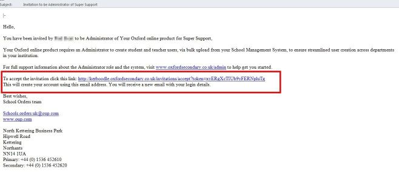
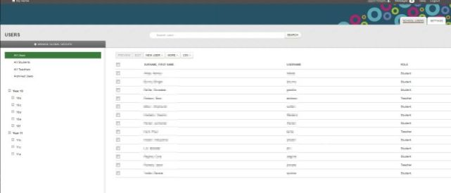
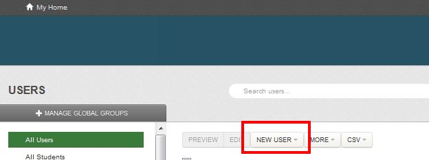

Administrator - Getting Started
If you have received an invitation to become the Administrator of your institution and are in need of a few pointers then please read through this getting started guide.
Receiving the invite
An invitation to become the Administrator will be sent from a teacher who currently has access to the platform via the no-reply@kerboodle.com email address. If the invitation hasn’t come through then please check with the teacher that they have sent it to the correct email address. The invitation will only be active for 2 days and if it is not accepted then you will have to be re-invited by the teacher.
Logging in
When you log into kerboodle as the Administrator you will be directed to the School Users tab. The Administrator does not have access to the content of courses - their only responsibility is creating user accounts and Registration Groups (groups that exist across the whole institution).
Creating teachers
Click on the New Users drop down menu in the centre console, which will allow you to create Teacher and Student users.
Select Teacher and fill in the teacher information and add them to the required course.
Each new Teacher account requires a unique email address to be associated with it. Creating a Teacher account sends an email to the registered address which prompts the Teacher to activate their account.
Creating students
The quickest way to create multiple students is to import them using a CSV file. We suggest that you first upload a test CSV file so that you can get an understanding of how the students are sorted into groups.
If you feel like you understand the process then please delete the test students by ticking the box next to their names, clicking on the More button and selecting Delete. You can then use our CSV Template to import your institution’s student data. The Import CSV button can be found by clicking CSV in the centre console of the School Users tab.
When the import is complete you will be sent an email to your registered email address. The email will either confirm that the students have been successfully created, or list the errors that will need to be corrected.
If you wish to create a single student then you can always click the New User button and select Student.
Please visit the creating users page for more detail.
Creating Registration Groups
You can create a Global Group through one of two ways. You can manually create the groups using the Manage Global Groups button in the School Users tab. This should display a pop up which will allow you to create, edit and delete groups. If you wish to create a new Global Group within an existing group, then select the desired top level group and click Create New Group. You can also create Global Groups using our CSV importer, as any Global Groups listed in the CSV file that haven’t been manually created, such as Years, Classes and Forms, will be automatically generated during the import process. Students will also be automatically assigned to these groups when the upload has been completed.
Administrator FAQs
Please visit our dedicated Administrator support page for further information.
Need technical advice?
For help with browsers and other technical queries, please visit our dedicated technical support pages.

© 2013 Oxford University Press. All rights reserved | Privacy Policy | Legal Notice